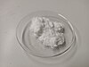

vanillin

Definition: Vanillin is an organic compound with the molecular formula C8H8O3. It is a phenolic aldehyde. Its functional groups include aldehyde, hydroxyl, and ether. It is the primary component of the extract of the vanilla bean. Synthetic vanillin is now used more often than natural vanilla extract as a flavoring in foods, beverages, and pharmaceuticals.
Source: Wikipedia
Wikipedia Page
Wikidata Page